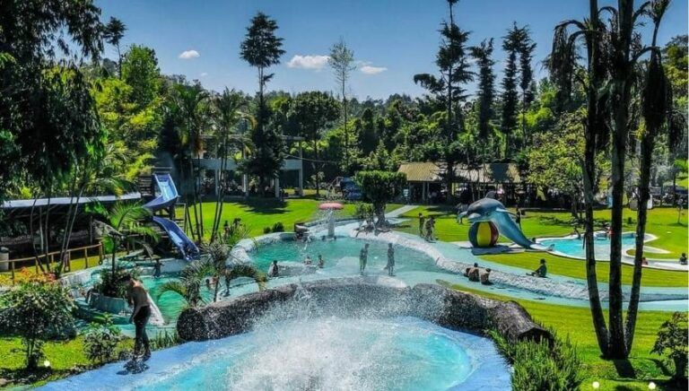

Balneario El Manantial es un destino natural ubicado en Guatemala que ofrece a los visitantes la opción de disfrutar de piscinas temáticas al aire libre. Dentro de la nota te contamos en dónde se encuentra este sitio y cuales son las tarifas para ingresar. ¡Pilas pues!
